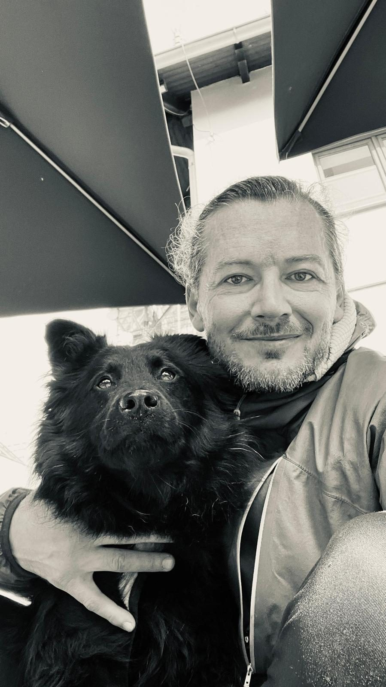

Fotím od roku 2014 — nejprve krajinu a přírodu, později i reportáž a svatby. Makro fotografie se stala třetí vášní poté, co jsem si poprvé půjčil objektiv 100 mm.
Pracuji po celé České republice i v zahraničí. Preferuji přirozené světlo a minimální zásahy v postprodukci — fotografie má zůstat upřímná.
Mimo fotoaparát najdete mě na horách, s dalekohledem na ptáky, nebo v terénu dlouho před svítáním.